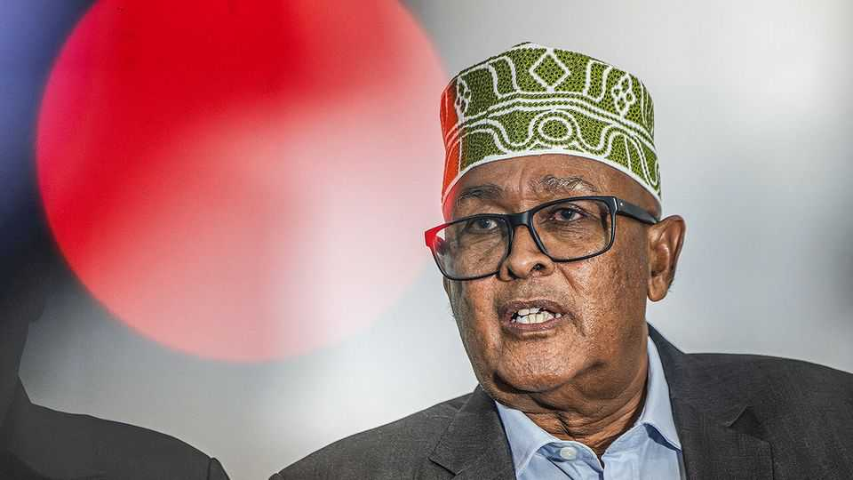
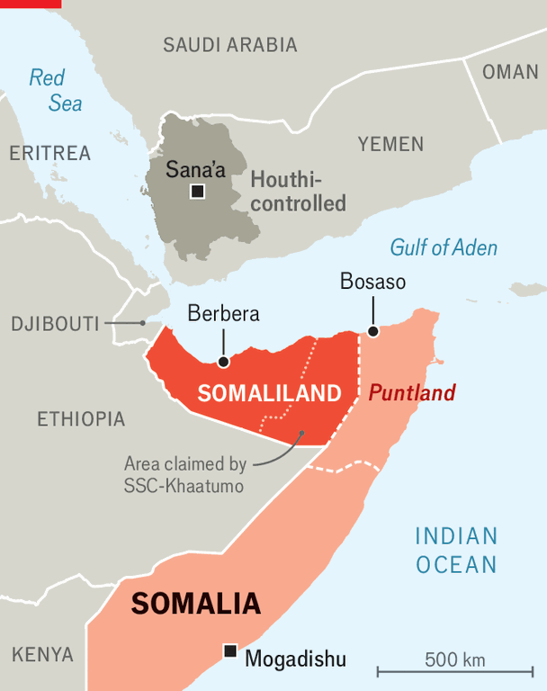

Somaliland wants to help secure the Red Sea
The president hopes this will bring international recognition for the would-be state

Aug 20th 2026
Abdirahman Mohamed Abdullahi is an ambitious man. In December 2024 the 70-year-old former diplomat (pictured), who is better known as Irro, was sworn in as president of Somaliland, a breakaway republic that declared independence from Somalia in 1991. Last year he was the would-be country’s leader when Somaliland was formally recognised by Israel, the first nation to do so. “The world has been ignoring Somaliland for 35 years,” Irro tells The Economist. He wants outsiders to take a closer look.

Irro’s pitch centres on the Red Sea. The trade route has been a mess of late, with shipping menaced by the Houthis, an Iran-backed militia that rules much of Yemen. Speaking this month during a visit to Nairobi, Kenya’s capital, Irro says Somaliland can help secure the strategic waterway by offering military bases to global powers along its coastline. Once trade can flow unmolested again, he wants Somaliland’s main port at Berbera to be the primary gateway to the markets of the Horn of Africa. “Our message is that we are a responsible partner” in security and trade, says Irro.
He suggests that Somaliland could, in effect, be the new Djibouti. That tiny port-state rakes in some $125m a year by renting out slices of its coastline to foreign armies. America, China and France (among others) have bases there. It also earns many multiples of that amount in annual port fees paid by landlocked Ethiopia, which depends on Djibouti for most of its international trade.
Irro wants a slice of both Djiboutian cakes. He is trying to persuade Ethiopia to use Berbera, where the United Arab Emirates (UAE) has built a new harbour, as its main outlet to the sea. He also wants to entice America to set up a military base there. That would give America more options if it chooses to resume its war against the Houthis, whom it bombed intensively last year. Access to military facilities around Berbera is widely believed to have been part of the deal Israel struck with Irro when it recognised Somaliland in December. Some reports suggest that America and Israel may already be developing a military presence at Berbera, with covert support from the UAE, which operates an existing base there.
Irro denies such reports. “There is no Israeli or American presence yet,” he says. But the UAE has another base at the port of Bosaso in Puntland, a neighbouring semi-autonomous province of Somalia, where unconfirmed reports suggest Israel is also embedded. As competition for military properties on the Red Sea heats up, Irro says he would be willing to offer both Israel and America bases at Berbera “if they are interested”. Next month Irro will visit Washington, where he hopes to have a tête-à-tête with Donald Trump. Were that to happen, he would become the first president of Somaliland to meet directly with an American counterpart. “We expect the recognition of the United States some time in the future,” says Irro, adding that Somaliland anticipates recognition from at least one more country “before the end of the year”.
Irro’s ambitions are ruffling regional feathers. Djibouti is irked by Somaliland’s desire to barge in. Irro hints that his northern neighbour is trying to “destabilise” his country, presumably by supporting hostile militias on the border. Relations with Somalia are even more strained. Mr Irro claims Somalia, which considers Somaliland a renegade province, has plans to mobilise troops along the southern frontier. “This is not a peace recipe,” he adds.
It does not help that Israel and Turkey, a patron of Somalia, are increasingly hostile to each other. Turkey has long been trying to mediate between Somalia and Somaliland, yet numerous rounds of talks in Ankara and Istanbul have failed. “Next time they can happen in Tel Aviv,” chortles Irro, who seems unbothered by the prospect of a proxy war. Yet America may well be reluctant to stir the pot by recognising Somaliland.
The Houthis, meanwhile, have threatened to attack any Israeli military installation in the statelet. An American base there could become a target, too. That would shatter the reputation for peace and stability on which Somaliland has long built its case for international recognition. But “there is nothing free in the world,” says Irro. He seems willing to pay a price to put his country on the map—the question is, how high? ■
Sign up to the Analysing Africa, a weekly newsletter that keeps you in the loop about the world’s youngest—and least understood—continent.